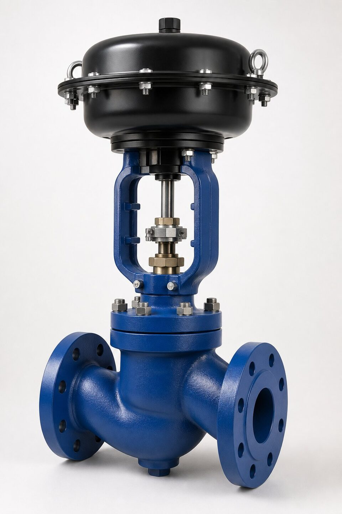

چرا به کلاس نشتی نیاز داریم؟
هیچ شیری به صورت مطلق آببند نیست؛ حتی بهترین شیرها هم در سطح نشیمنگاه مقدار بسیار کمی عبور دارند. صنعت برای اینکه خریدار و سازنده زبان مشترکی داشته باشند، حدود مجاز نشتی را در کلاسهای شمارهبندیشده تعریف کرده است. وقتی در مشخصه پروژه کلاس پنج ذکر میشود، یعنی نشتی نشیمنگاه در تست استاندارد باید از مقدار مشخصی کمتر باشد. این زبان مشترک، مقایسه پیشنهادها را ممکن میکند و از ادعاهای مبهم مانند «شیر کاملاً کیپ» جلوگیری مینماید.

مرور کلاسها از یک تا شش
کلاس یک پایینترین سطح است و در عمل کمتر به صورت صریح سفارش داده میشود؛ چون بسیاری از شیرها بدون تست ویژه همین سطح را دارند. کلاسهای دو و سه با نشیمنگاه فلزی و لقی کنترلشده به دست میآیند و برای سرویسهایی که نشتی کم اهمیت است کافیاند. کلاس چهار مرز رایج شیرهای فلز به فلز با کیفیت ساخت خوب است. کلاس پنج با نشیمنگاه فلزی سنگزنیشده و نیروی نشستن بالا، برای سرویسهای حساس استفاده میشود. کلاس شش فقط با نشیمنگاههای نرم مانند پیتیئیافئی یا الاستومر قابل دستیابی است و عملاً نشتی ندارد.
جدول مقایسه کلاسها
| کلاس | نوع رایج نشیمنگاه | سطح نشتی | کاربرد معمول |
|---|---|---|---|
| کلاس یک | — | بدون الزام تست ویژه | عمومی، بدون حساسیت |
| کلاس دو | فلزی با لقی کنترلشده | زیاد نسبت به چهار | سرویسهای عمومی |
| کلاس سه | فلزی | متوسط | کنترل معمولی |
| کلاس چهار | فلزی با پرداخت خوب | کم | رایجترین سطح صنعتی |
| کلاس پنج | فلزی سنگزنیشده | بسیار کم | سرویسهای حساس |
| کلاس شش | نرم (الاستومر/پیتیئیافئی) | عملاً صفر | قطع کامل در دمای پایین |
حدود نسبی؛ مقادیر دقیق باید از جداول مرجع استاندارد مربوطه استخراج شود.
نشیمنگاه؛ عامل اصلی تعیین کلاس
- فلز به فلز: تحمل دما و سایش بالا، کلاس تا پنج، نیازمند نیروی نشستن کافی.
- پیتیئیافئی: آببندی عالی تا کلاس شش، محدودیت دما حدود دویست و سی درجه.
- الاستومرها (مانند نیتریل): آببندی عالی در دمای پایین، حساس به برخی سیالها.
- ترکیبی (فنرپشتیبان): برای حفظ کلاس بالا پس از سیکلهای حرارتی.
روش تست و مدارک
تست نشتی نشیمنگاه معمولاً با هوا یا گاز بیخطر انجام میشود: شیر در وضعیت بسته قرار میگیرد، فشار مشخصی به یک طرف اعمال و مقدار عبوری از طرف دیگر با روش حساس اندازهگیری میشود. نتیجه با حدود جدول استاندارد مقایسه و کلاس تأیید میگردد. گزارش تست باید فشار، سیال، روش اندازهگیری و نتیجه را ذکر کند تا قابل دفاع باشد. نکته مهم این است که کلاس نشتی در شرایط تست تعریف میشود و در شرایط کاری واقعی، به دلیل انبساط حرارتی و سایش، ممکن است تغییر کند.
راهنمای انتخاب کلاس
برای انتخاب کلاس، سه پرسش بپرسید: اگر شیر در وضعیت بسته نشت کند چه اتفاقی میافتد؟ دمای کاری نشیمنگاه چقدر است؟ سیال خورنده یا ساینده است؟ اگر پاسخها به ترتیب «حیاتی، پایین، تمیز» باشند، کلاس شش نرم انتخاب شود. اگر دما بالاست یا سیال ذرات دارد، باید به کلاس چهار یا پنج فلزی کوچ کرد و بهای نشتی اندک را در مقابل عمر نشیمنگاه پذیرفت. در بسیاری از پروژهها، ذکر کلاس چهار به عنوان پیشفرض و کلاس بالاتر برای نقاط حساس، تعادل مناسبی بین هزینه و عملکرد ایجاد میکند.
جمعبندی
کلاس نشتی، زبان مشترک خریدار و سازنده برای تعریف «کیپ بودن» است. انتخاب کلاس باید بر اساس پیامد نشتی، دمای کاری و ماهیت سیال انجام شود؛ نه بر اساس این تصور که کلاس بالاتر همیشه بهتر است. با ذکر صریح کلاس در استعلام و درخواست گزارش تست، مقایسه پیشنهادها شفاف و قابل دفاع میشود.
سوالات رایج
کلاس نشتی چیست؟
حد مجاز عبور سیال از نشیمنگاه شیر در شرایط تست استاندارد است. هر کلاس بالاتر، نشتی کمتر و آببندی دقیقتری دارد.
بالاترین کلاس نشتی کدام است؟
کلاس شش که با نشیمنگاههای نرم مانند پیتیئیافئی یا الاستومر به دست میآید و عملاً نشتی قابل اندازهگیری با روش استاندارد ندارد.
آیا کلاس بالاتر همیشه بهتر است؟
خیر. نشیمنگاههای نرم دما و سایش کمتری را تحمل میکنند. در سرویسهای داغ یا ساینده، کلاس چهار یا پنج با نشیمنگاه فلزی انتخاب درستتری است.
کلاس نشتی چگونه تست میشود؟
با عبور هوا یا آب از نشیمنگاه در فشار مشخص و اندازهگیری مقدار عبوری؛ نتیجه با حدود جدول استاندارد مقایسه و کلاس تعیین میشود.
مطالب مرتبط
- راهنمای شیرهای کنترل
- متریال نشیمنگاه شیرآلات
- راهنمای تست و معیارهای نشتی شیرآلات
- راهنمای جامع شیر سوزنی (گلوب)
با ذکر کلاس نشتی مورد نیاز، شیر کنترل همراه عملگر و مدارک تست نشیمنگاه عرضه میشود.
مشاهده صفحه محصول ← ثبت RFQ همین محصولتامین این تجهیزات را به پیشرو تجهیز فرتاک بسپارید
شرکت پیشرو تجهیز فرتاک تامینکننده تخصصی تجهیزات صنعتی برای پروژههای نفت، گاز، پتروشیمی، فولاد و نیروگاهی است. برای دریافت پیشنهاد فنی و قیمت، استعلام (RFQ) خود را ثبت کنید تا کارشناسان مهندسی فروش در کوتاهترین زمان پاسخ دهند.
- تامین شیرآلات صنعتیخانواده کامل شیر با گواهی مواد و تست
- تامین تجهیزات صنایع نفت و گازپکیج مواد مطابق وندورلیست